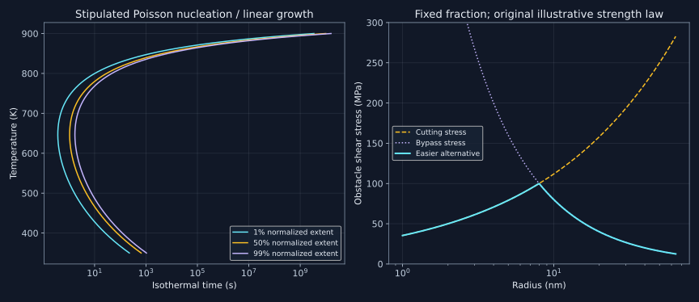

21. Nucleation, transformation diagrams and precipitation aging
An equilibrium diagram identifies possible products and amounts; it does not specify how many nuclei appear, their size distribution or the stress required to move a dislocation through them. Overall transformation kinetics connects driving forces to nucleation, growth, field overlap and evolving particle populations. The central discipline is to keep these different observables distinct.
21.1 Bulk driving force does not eliminate a small-cluster barrier
Lesson 53, 1:28–11:58. Topic span; mathematical constructions and numerical examples are explicitly original extensions.
Let a spherical product cluster of radius r have isotropic interface free energy gamma in J/m². Write the positive bulk transformation benefit as delta-g-b in J/m³ and approximate a coherent elastic cost by a positive constant density e. Define $d=\Delta g_b-e$. At fixed temperature and the specified chemical environment, the capillarity model is
$$W(r)=4\pi\gamma r^2-\frac{4\pi}{3}d r^3.$$The bulk driving force must use a consistent thermodynamic constraint. For a nucleus exchanging components with a large parent reservoir, the relevant chemical-potential or tangent-plane construction determines its composition and benefit; subtracting arbitrary same-composition phase molar energies is not a universal multicomponent nucleation calculation. Molar and volumetric quantities also require the appropriate molar-volume conversion before combining them with an area term.
For d positive, differentiate: $W'=4\pi r(2\gamma-dr)$. The nonzero stationary radius and its barrier are
$$r_*=\frac{2\gamma}{d},\qquad W_*=\frac{16\pi\gamma^3}{3d^2}.$$The second derivative at r-star is $-8\pi\gamma$, so this stationary point is a maximum along the radius coordinate, not a stable minimum. Subcritical clusters tend to shrink and supercritical ones tend to grow under the model's fixed conditions, with stochastic fluctuations still possible. A critical nucleus is an unstable threshold configuration. The model's total work crosses zero only at $r_0=3\gamma/d=1.5r_*$. Thus a just-supercritical cluster can lower its work by growing while its work is still positive relative to the initial parent.
With gamma=0.05 J/m², delta-g-b=10⁸ J/m³ and e=2×10⁷ J/m³, the original example gives r-star=1.25 nm, zero crossing 1.875 nm and barrier $W_*/(k_BT)=38.036693552$ at 623.15 K. The code verifies the stationary value and the lower work on either side. If d is nonpositive, this simple model has no downhill large-radius product growth. If the critical cluster is only a few atomic spacings across, treating its surface as a sharp interface with size-independent bulk gamma becomes a questionable approximation.
The constant elastic-density construction is itself an assumption. Coherency, elastic anisotropy, shape, surrounding constraint and relaxation through defects can change it with size. A liquid does not sustain an equilibrium static shear stress like a solid, but that fact does not erase capillary pressure, volume constraints or every possible mechanical contribution. The lecture's bond pictures motivate the energetic terms; they are not atomistically complete definitions of interface free energy.
21.2 Nucleation rates combine a barrier, a kinetic prefactor and a site population
Lesson 53, 11:58–17:09. Topic span; mathematical constructions and numerical examples are explicitly original extensions.
A schematic homogeneous steady-state rate is $I=N_s Z\beta\exp[-W_*/(k_BT)]$. Here Ns is a site density, Z is a dimensionless barrier-crossing factor and beta is an attachment frequency per site under the chosen convention. I has units nuclei/(m³ s). With a molar activation barrier the exponential must instead use RT; a barrier for one cluster in joules uses kBT. A large negative bulk benefit does not guarantee a high rate when attachment is kinetically slow.
Holding the combined prefactor at an explicitly illustrative 10³² m⁻³ s⁻¹ gives $I=3.026034538\times10^{15}$ m⁻³ s⁻¹ for the stipulated barrier. In a constant-rate Poisson approximation, a volume V observed for time t has event probability $P(\text{at least one})=1-\exp(-IVt)$ and mean first-event waiting time $1/(IV)$. For V=10⁻¹⁸ m³ and t=100 s, the probability is 0.261107957 and the mean wait is 330.465494507 s. A low expected count is not a deterministic incubation time during which events are impossible.
For a spherical-cap nucleus on an ideal flat inert substrate, a fixed contact angle measured through the product gives the geometric barrier factor
$$f(\theta)=\frac{(2+\cos\theta)(1-\cos\theta)^2}{4}.$$At 60 degrees it is 0.15625. This ideal heterogeneous model assumes the relevant interfacial balance and cap geometry; it does not cover every grain-boundary, dislocation or coherent-inclusion geometry. A smaller barrier alone also does not fix the total heterogeneous rate: available site densities and attachment kinetics can differ from the homogeneous case. A rate per boundary area must be converted using the actual boundary area per specimen volume before comparison with a volumetric rate.
Increasing supersaturation can lower a bulk nucleation barrier and enable many intragranular nuclei. It does not switch off heterogeneous sites. The recording's explanation of aging as suppressing heterogeneous nucleation should therefore be read as a processing goal, not a universal consequence of supersaturation. Likewise a formal homogeneous rate does not guarantee a perfectly uniform realized particle spacing. Positions fluctuate, sites can correlate and depletion fields subsequently interact.
21.3 Derive an impingement correction from a random-growth model
Lesson 53, 17:10–19:12. Topic span; mathematical constructions and numerical examples are explicitly original extensions.
Consider an ideal infinite three-dimensional material with homogeneous Poisson attempted births of intensity I per unit volume per unit time. Every accepted nucleus grows isotropically with common constant radial speed u. Introduce “extended” spheres that continue through one another and allow attempted births even inside already transformed material. The extended volume covering a specified point at time t is
$$Y(t)=\int_0^t I\,\frac{4\pi}{3}[u(t-\tau)]^3\,d\tau =\frac{\pi}{3}Iu^3t^4.$$The set of space-time births whose extended spheres reach the point has Poisson mean Y. Its probability of containing no birth is exp(−Y), giving the actual covered fraction
$$X(t)=1-e^{-Y(t)}=1-\exp(-Kt^4),\qquad K=\frac{\pi Iu^3}{3}.$$Y can exceed one because overlaps are counted repeatedly; X cannot. A phantom birth inside an earlier sphere does not change the covered union in this constant-speed construction: by the triangle inequality, its later sphere is contained within the earlier sphere's later reach. This containment is why the extension is consistent with physical impingement here. Arbitrary diffusion-limited growth laws, nonrandom sites or growth changed by solute depletion do not automatically retain that argument.
I is the attempted intensity used in the extended construction. The actual accepted new nuclei per specimen volume are reduced by the untransformed fraction. Extended birth moments used in the code are therefore not a prediction of the number density of distinct physical precipitates after impingement. The geometry model also contains no evolving solute inventory or curvature-dependent growth; it should not be substituted for an alloy population balance.
For I=10¹⁴ m⁻³ s⁻¹ and u=10⁻⁸ m/s, K=1.047197551197×10⁻¹⁰ s⁻⁴. Fractions 1%, 50% and 99% occur at 98.977843939, 285.232632883 and 457.935451981 s. These are operational fraction thresholds, not three microscopic nucleation times. No additional induction-time shift has been introduced.
If all nuclei are instead present initially with Poisson number density N0, the extended fraction is $(4\pi/3)N_0u^3t^3$, giving exponent three. In d dimensions with a stipulated radius proportional to age raised to p, the continuous-birth extended integral scales as $t^{dp+1}$, whereas site-saturated extended volume scales as $t^{dp}$. Those scaling counts do not prove the same exact impingement correction for every growth law. Fitting a noninteger Avrami exponent therefore does not uniquely reveal dimensionality or nucleation mechanism.
21.4 Specify which fraction defines a TTT “start” or “finish”
Lesson 54, 0:53–3:56. Topic span; mathematical constructions and numerical examples are explicitly original extensions.
The isothermal experiments described in lesson 54 prepare comparable parent material, expose separate samples at a fixed temperature for different times and measure product amount. A TTT diagram collects specified fraction times at many such temperatures. “Start” and “finish” require definitions: here they mean 1% and 99% of a stipulated normalized transformation extent. They are not mathematical zero and one, which the exponential model reaches only at limiting times.
When the equilibrium precipitate fraction is small, normalized extent is not absolute product volume fraction. For an initially absent product with final fraction $f_{\rm eq}$, define $X=f/f_{\rm eq}$ only when that monotone single-product interpretation is appropriate. If feq=0.01, a 1% normalized start corresponds to absolute fraction 0.0001. A diagram based on an absolute 1% threshold would ask an entirely different question and might never register a larger “finish.”
Competitive products complicate this further. A metastable carbide can appear and later dissolve while another product grows. Its individual fraction need not increase monotonically toward its eventual equilibrium value. Every plotted start curve must specify phase identity, reference amount, threshold and observation window. The recorded Fe–C and Fe–Cr–C precipitation demonstrations use selected phases and heterogeneous site settings; their displayed experimental agreement is not independently revalidated by these synthetic notes.
To illustrate a C-shaped family, the program stipulates $T_m=1000$ K, positive nucleation and growth functions
$$I(T)=10^{32}\exp\!\left[-\frac{60000}{RT} -\frac{10^9\ {\rm K^3}}{T(T_m-T)^2}\right],$$ $$u(T)=10^{-3}\exp[-50000/(RT)] \left[1-\exp\!\left(-\frac{\Delta\mu(T)}{RT}\right)\right]\ {\rm m/s}, \qquad \Delta\mu(T)=10000\frac{T_m-T}{T_m}\ {\rm J/mol}.$$The first prefactor has units m⁻³ s⁻¹ and the molar activation energies are in J/mol. The temperature-dependent barrier suppresses nucleation near Tm; low-temperature attachment and growth become slow. Evaluating $t_X=[-\ln(1-X)/K(T)]^{1/4}$ on the integer-kelvin grid 300–950 K puts the synthetic 1% nose at 647 K and 0.370627202 s. This is a grid minimum for a chosen mathematical law, not an assessed alloy prediction or a universally optimal aging temperature.

21.5 Identical isothermal kinetics need not imply identical cooling kinetics
Lesson 54, 11:07–12:08. Topic span; mathematical constructions and numerical examples are explicitly original extensions.
For a common speed u(t) that changes with time, an extended sphere born at tau has radius $\int_\tau^t u(s)\,ds$. The corresponding Poisson coverage is
$$Y(t)=\frac{4\pi}{3}\int_0^t I(\tau) \left[\int_\tau^t u(s)\,ds\right]^3d\tau,\qquad X=1-e^{-Y}.$$The additive integrated growth distance preserves the containment argument for this ideal model. The history integral shows why the instantaneous value of K(T)=πI(T)u(T)³/3 does not usually suffice. A nucleus born at one temperature grows later at other temperatures. Its contribution couples past nucleation to subsequent growth rather than multiplying two rates evaluated at the same instant.
Here is an explicit counterexample. Model A uses I=10¹⁴ and u=10⁻⁸ in the stated units for two successive 100 s stages. Model B uses I/8 and 2u in stage one, then 8I and u/2 in stage two. At each stage both models have the same product Iu³, so their independently initialized isothermal X(t) curves are identical. Nevertheless the two-stage history gives $X_A=0.154267031$ and $X_B=0.035357214$. A table containing only the isothermal fraction curves cannot distinguish them.
To evaluate the history efficiently, define extended moments $M_j=\int_0^t I(\tau)R(\tau,t)^j\,d\tau$ for j=0 through three. Over a step of duration h with constant I and u, old radii increase by uh. Expanding the binomial and integrating births during the step gives
$$M_j^{\rm new}=\sum_{k=0}^j{j\choose k}(uh)^{j-k}M_k^{\rm old} +\frac{Iu^jh^{j+1}}{j+1}.$$The code implements this exact piecewise-constant update, not an O(N²) repeated history integral. It uses midpoint temperature values and then doubles the number of steps as a thermal-history refinement check. For cooling from 950 to 300 K, synthetic 1% start temperatures are approximately 796.115, 754.970 and 667.282 K at 1, 10 and 100 K/s. Refinement changes each start by less than 0.005 K. The fastest case ends at X=0.477455662; the two slower cases round to one at the displayed precision.
A scalar accumulated-time or additivity approximation can be useful when additional isokinetic conditions are satisfied. It must be declared as a model assumption. Drawing a cooling line across an isothermal TTT diagram and reading its intersection is not in general a derivation of a CCT transformation point. Solute depletion, changing phase populations, nonuniform temperature and different nucleation sites add further memory beyond this already history-dependent idealization.
21.6 Particle counts, mean sizes and volume fractions contain different information
Lesson 55, 17:09–19:02. Topic span; mathematical constructions and numerical examples are explicitly original extensions.
Let $n(r,t)$ be a spherical-particle number density per specimen volume per radius interval, with units m⁻⁴. Its moments are $M_j=\int r^j n(r,t)\,dr$. The physical number density is M0, the number-weighted mean radius is M1/M0, and the volume fraction is $f=(4\pi/3)M_3$. These are physical particle-distribution moments, distinct from the extended attempted-birth moments in the previous section.
Replacing M3 by M0 times the cube of mean radius generally fails. Our two-bin example contains 2.5×10²¹ particles/m³ at radius 2 nm and the same number at 8 nm. Its number-mean radius is 5 nm, but its exact volume fraction is 0.005445427266. Substituting the cube of 5 nm gives 0.002617993878, smaller by a factor 2.08. A few large particles can dominate volume while contributing little to the particle count. Radius, diameter and the weighting convention must accompany any reported “mean size.”
For equal molar densities, a simple two-composition amount balance is $c_0=(1-f)c_m+fc_p$. With nominal solute fraction 0.0018, precipitate fraction composition 0.25 and the two-bin f, the matrix solute fraction is 0.000441044861. Taking planar matrix solubility 0.0001 would give equilibrium amount fraction 0.006802721088. The current population is consistent with a still-supersaturated matrix. Unequal phase molar volumes require converting amount fractions to volume fractions; they cannot be interchanged without correction.
A continuum population equation can be written schematically as $\partial_tn+\partial_r(\dot r\,n)=I\delta(r-r_*)$, with appropriate small-size loss and other terms. Integrating gives moment balances: growth changes size moments, birth adds new particles, and shrinking particles can exit at zero size. Matrix concentration must be updated from total solute inventory so every new nucleus and growth increment is paid for. A number density that keeps increasing indefinitely while precipitates grow at fixed supersaturation would generally violate that inventory in a closed alloy.
The actual Clouet, Barbu, Laé and Martin (2005) cluster-dynamics preprint, pp.1–4 was read. It evolves discrete cluster populations with attachment and emission rates and treats monomer conservation explicitly, rather than prescribing independent nucleation, growth and coarsening stages. Its atomistic comparisons and full experimental assessment were not reproduced. This primary example illustrates how an evolving size distribution can replace a sharp division into a matrix and already recognizable precipitates.
In a monomer-exchange cluster model, write $F_j=\beta_jC_j-\alpha_{j+1}C_{j+1}$ and $\dot C_j=F_{j-1}-F_j$ for j at least two. Monomers obey $\dot C_1=-2F_1-\sum_{j\ge2}F_j$: making a dimer consumes two monomers, whereas attaching to an existing larger cluster consumes one. Multiply each cluster equation by j and sum. Internal fluxes telescope, cancelling the monomer terms, so $\frac{d}{dt}\sum_{j\ge1}jC_j=0$ when the upper boundary carries no lost solute flux. This explicit count shows why a size-grid truncation or an incorrect factor two can violate solute conservation even if every individual population remains nonnegative. It is a structural check on a prospective solver, not a claim that the present program integrates this full rate system.
21.7 Ostwald ripening is driven by curvature-dependent chemical potential
Lesson 55, 10:20–11:25. Topic span; mathematical constructions and numerical examples are explicitly original extensions.
For this isotropic spherical-precipitate toy, define $V_m$ as particle volume per mole of the precipitating solute, not per mole of all precipitate atoms. For a formula unit containing one solute atom it is also volume per mole of such formula units. The capillary contribution to chemical potential per mole of solute is $2\gamma V_m/r$. In a dilute ideal matrix, neglecting the solvent-chemical-potential correction and retaining a fixed precipitate composition, this gives the Gibbs–Thomson approximation
$$c_{\rm eq}(r)=c_{\rm eq}(\infty) \exp\!\left[\frac{2\gamma V_m}{rRT}\right].$$The capillary chemical-potential shift follows by differentiation. A sphere has area $A=4\pi r^2$ and solute amount $n_{\rm solute}=4\pi r^3/(3V_m)$, so $\partial(\gamma A)/\partial n_{\rm solute}=(8\pi\gamma r)/(4\pi r^2/V_m)=2\gamma V_m/r$. Equating this solute-specific shift with $RT\ln[c_{\rm eq}(r)/c_{\rm eq}(\infty)]$ yields the displayed exponential under the stated dilute approximation. If $v_{\rm atom}$ is volume per mole of all precipitate atoms and $c_p$ is their solute atomic fraction, then $V_m=v_{\rm atom}/c_p$. The earlier equal-density inventory uses atomic fractions; these molar bases are not interchangeable. Composition-dependent interface energy, nonideal matrix activity, solvent-potential corrections, elastic stress and nonspherical curvature require a more general relation.
Smaller particles require a larger surrounding equilibrium solute concentration. A common matrix reservoir can therefore be undersaturated relative to a small particle and supersaturated relative to a large one. The small particle dissolves and supplies solute that can grow the large one; direct contact or literal collision between particles is unnecessary.
For gamma=0.1 J/m², the explicitly stipulated solute-specific $V_m=10^{-5}$ m³/mol solute, T=623.15 K and matrix concentration 1.12 times the planar solubility, the critical capillary radius is $2\gamma V_m/[RT\ln(1.12)]=3.406146793$ nm. A quasistatic dilute spherical growth check with D=10⁻¹⁹ m²/s uses
$$\dot r=\frac{D}{r} \frac{c_m-c_{\rm eq}(r)}{c_p-c_{\rm eq}(r)}.$$The stipulated 2 nm particle shrinks at −1.858729122781×10⁻¹⁵ m/s while the 8 nm particle grows at 3.529739923427×10⁻¹⁶ m/s. This solute-specific volume is an original toy parameter, not an assessed Al3Sc molar volume. This is an instantaneous check in a specified reservoir, not a complete closed-population ripening simulation. The reservoir would need to evolve consistently during a finite closed-system calculation.
At fixed total particle volume, fewer larger spheres also have less total surface area. Replacing one 2 nm and one 8 nm sphere by one equal-volume sphere gives radius 8.041451517 nm and area ratio 0.950955037. This is a geometric energy comparison; it does not assert that ripening occurs by physical coalescence into a sphere at that moment. In a late dilute coarsening regime the characteristic radius often follows a cube-law scaling, but finite volume fractions, elasticity, coherency loss and multiple species can change a simple asymptotic model.
21.8 Aging improves strength through an evolving obstacle population
Lesson 55, 0:35–10:20. Topic span; mathematical constructions and numerical examples are explicitly original extensions.
The processing sequence is solution treatment, quenching and aging. Solution treatment aims to dissolve the desired solute into an appropriate parent phase; quenching attempts to retain a supersaturated state; aging allows an obstacle population to develop. The phase diagram helps choose possible states, but quench effectiveness depends on the complete cooling history. A quenched alloy may still precipitate at defects, retain excess vacancies, develop residual stress or age at room temperature. “Frozen” is an approximation to a specified timescale.
The recording uses Al with 0.18 mole percent Sc, Al3Sc precipitates in an FCC matrix and aging at 350 °C. The mole fraction is 0.0018, and the temperature is 623.15 K. A reported size statement equates $1.6\times10^{-8}$ m with roughly 60 nm; the numerical conversion is 16 nm. The transcript later calls the plotted quantity mean radius. Without the underlying plotted axis/project audit these notes retain that ambiguity instead of silently using 60 nm or interchanging radius and diameter.
An edge dislocation can be pictured using an extra half-plane, but a general dislocation is characterized by its line geometry and Burgers vector, not a universal count of missing nearest neighbors. Grain boundaries can impede or transmit slip depending on crystallography and stress. Precipitates can be cut or bypassed; they do not permanently arrest every dislocation that meets them. Diffusion along cores and boundaries likewise depends on species, temperature and geometry rather than an absolute universal hierarchy of all defect diffusivities.
At fixed volume fraction, increasing particle radius can make cutting harder while making bypass easier because obstacle spacing increases. A deliberately simple competition model uses alternative shear stresses
$$\tau_{\rm cut}=100\sqrt{r/(8\ {\rm nm})}\ {\rm MPa},\qquad \tau_{\rm bypass}=100(8\ {\rm nm}/r)\ {\rm MPa},$$ $$\sigma_y=50\ {\rm MPa}+3\min(\tau_{\rm cut},\tau_{\rm bypass}).$$The lower stress is chosen because these are alternative ways through the same idealized obstacles. It is not a rule to take the minimum of every independent strengthening contribution. This toy gives 200, 350 and 125 MPa at radii 2, 8 and 32 nm, with a maximum at the crossing radius 8 nm. It is a size-dependent illustration at fixed fraction, not a prediction of peak aging time; a real population's size, fraction, shape, coherency and spatial distribution all evolve.
The selected actual Sun, Zhang and Wen (2023) preprint, pp.1–3 was read. Its model studies thermal activation and competition between shear and bypass mechanisms. These opening pages support treating temperature and mechanism competition as additional modeling questions; the paper's quantitative stress law and validations were not independently rerun or adopted for our synthetic curve. Peak strength is consequently not guaranteed to occur at the time of maximum particle number density, and a strength optimum need not optimize toughness, corrosion resistance or thermal stability.
21.9 Execute the checks
Download the exact standard-library program. It checks the capillarity maximum, event probabilities, fraction thresholds, a constructive TTT/CCT nonuniqueness example, a refined cooling calculation, particle moments, solute inventory, opposite curvature-driven growth signs and the separate strength toy.
"""Synthetic nucleation, random growth, particle moments and strength c\
hecks."""
from math import pi, exp, expm1, log, log1p, sqrt, cos, isclose
KB = 1.380649e-23
R = 8.31446261815324
temp = 623.15
gamma = 0.05
bulk = 1e8
elastic = 2e7
drive = bulk - elastic
radius = 2 * gamma / drive
barrier = 16 * pi * gamma**3 / (3 * drive**2)
def work(r):
return 4 * pi * gamma * r * r - 4 * pi * drive * r**3 / 3
assert isclose(work(radius), barrier, rel_tol=1e-14)
assert work(0.9 * radius) < barrier and work(1.1 * radius) < barrier
shape = (2 + cos(pi / 3)) * (1 - cos(pi / 3)) ** 2 / 4
print(
(
f"Capillarity: critical radius="
f"{radius * 1000000000.0:.9f}"
f" nm, zero crossing="
f"{3 * gamma / drive * 1000000000.0:.9f}"
f" nm, barrier/kBT="
f"{barrier / (KB * temp):.9f}"
f", flat60degree factor="
f"{shape:.9f}"
)
)
prefactor = 1e32
rate = prefactor * exp(-barrier / (KB * temp))
volume = 1e-18
tobs = 100.0
prob = -expm1(-rate * volume * tobs)
print(
(
f"Illustrative homogeneous events: rate="
f"{rate:.9e}"
f"/m3/s; probability in1e-18m3 over100s="
f"{prob:.9f}"
f"; mean wait="
f"{1 / (rate * volume):.9f}"
f"s"
)
)
ii, uu = 1e14, 1e-8
k = pi * ii * uu**3 / 3
thresholds = [(-log1p(-x) / k) ** 0.25 for x in (0.01, 0.5, 0.99)]
print(
"Constant random nucleation/linear growth: K="
+ f"{k:.12e}/s4; t1%,t50%,t99%="
+ str([round(x, 9) for x in thresholds])
)
ns = 1e18
k3 = 4 * pi * ns * uu**3 / 3
print(
(
f"Site-saturated linear growth: n=3, t50="
f"{(-log(0.5) / k3) ** (1 / 3):.9f}"
f"s; no added induction time"
)
)
# Exact moment update for ideal Poisson births and common linear radial growth,
# with I and u piecewise constant within a time interval.
def advance(m, i, u, dt):
g = u * dt
a, b, c, d = m
return (
a + i * dt,
b + g * a + i * u * dt**2 / 2,
c + 2 * g * b + g * g * a + i * u * u * dt**3 / 3,
d + 3 * g * c + 3 * g * g * b + g**3 * a + i * u**3 * dt**4 / 4,
)
base = (0.0, 0.0, 0.0, 0.0)
ma = advance(advance(base, ii, uu, 100), ii, uu, 100)
mb = advance(advance(base, ii / 8, uu * 2, 100), ii * 8, uu / 2, 100)
xa = -expm1(-4 * pi * ma[3] / 3)
xb = -expm1(-4 * pi * mb[3] / 3)
assert abs(xa - xb) > 0.05
assert isclose((ii / 8) * (uu * 2) ** 3, ii * uu**3)
assert isclose((ii * 8) * (uu / 2) ** 3, ii * uu**3)
print(
(
f"Same isothermal K at both stages, different histories: X_A="
f"{xa:.9f}"
f", X_B="
f"{xb:.9f}"
f"; TTT K alone does not determine CCT"
)
)
tm = 1000.0
def rates(t):
assert 0 < t < tm
nuc = 1e32 * exp(-60000 / (R * t) - 1e9 / (t * (tm - t) ** 2))
dg = 10000 * (tm - t) / tm
growth = 1e-3 * exp(-50000 / (R * t)) * (-expm1(-dg / (R * t)))
return nuc, growth
def t_fraction(t, x):
i, u = rates(t)
return (-log1p(-x) / (pi * i * u**3 / 3)) ** 0.25
nose = min(range(300, 951), key=lambda t: t_fraction(t, 0.01))
print(
(
f"Synthetic TTT1% grid nose="
f"{nose}"
f"K, time="
f"{t_fraction(nose, 0.01):.9f}"
f"s; no real alloy calibration"
)
)
def cooling(cooling_rate, steps):
hi, low = 950.0, 300.0
dt = (hi - low) / (cooling_rate * steps)
m = (0.0, 0.0, 0.0, 0.0)
old_y = 0.0
found = None
target = -log1p(-0.01)
for j in range(steps):
tt = hi - (j + 0.5) * (hi - low) / steps
i, u = rates(tt)
m = advance(m, i, u, dt)
y = 4 * pi * m[3] / 3
if found is None and y >= target:
frac = (target - old_y) / (y - old_y)
found = hi - (j + frac) * (hi - low) / steps
old_y = y
return found, -expm1(-old_y)
for speed in (1.0, 10.0, 100.0):
coarse = cooling(speed, 2000)
fine = cooling(speed, 4000)
assert (
coarse[0] is None
and fine[0] is None
or abs(coarse[0] - fine[0]) < 0.01
)
print(
(
f"Synthetic continuous cooling "
f"{speed:g}"
f"K/s: T1%="
f"{fine[0]}"
f", final X="
f"{fine[1]:.9f}"
f"; refinement temperature difference="
f"{(None if fine[0] is None else abs(coarse[0] - fine[0]))}"
)
)
# A two-bin geometric distribution; equal total molar density approximates
# volume=amount.
radii = (2e-9, 8e-9)
number = (2.5e21, 2.5e21)
n = sum(number)
rmean = sum(a * b for a, b in zip(number, radii)) / n
f = 4 * pi / 3 * sum(a * b**3 for a, b in zip(number, radii))
wrong = 4 * pi * n * rmean**3 / 3
initial, cp, ceq = 0.0018, 0.25, 0.0001
matrix = (initial - f * cp) / (1 - f)
feq = (initial - ceq) / (cp - ceq)
assert 0 < ceq < matrix < initial and 0 < f < feq
print(
(
f"Two-bin population: mean radius="
f"{rmean * 1000000000.0:.6f}"
f"nm, exact volume fraction="
f"{f:.12f}"
f", mean-radius substitution="
f"{wrong:.12f}"
f", ratio="
f"{f / wrong:.9f}"
)
)
print(
(
f"Solute inventory: matrix x="
f"{matrix:.12f}"
f"; planar-equilibrium amount fraction="
f"{feq:.12f}"
f"; current fraction below inventory bound"
)
)
capgamma, vm = 0.1, 1e-5
reservoir = 1.12 * ceq
d = 1e-19
critical = 2 * capgamma * vm / (R * temp * log(reservoir / ceq))
growth = []
for r in radii:
surface = ceq * exp(2 * capgamma * vm / (r * R * temp))
dr = d / r * (reservoir - surface) / (cp - surface)
growth.append(dr)
assert growth[0] < 0 < growth[1]
print(
(
f"Gibbs-Thomson toy: reservoir critical radius="
f"{critical * 1000000000.0:.9f}"
f"nm; growth at2/8nm="
f"{growth[0]:.12e}"
f","
f"{growth[1]:.12e}"
f"m/s"
)
)
combined = (sum(r**3 for r in radii)) ** (1 / 3)
area_ratio = combined**2 / sum(r * r for r in radii)
assert area_ratio < 1
print(
(
f"Equal-volume area check: combined radius="
f"{combined * 1000000000.0:.9f}"
f"nm; new/old area="
f"{area_ratio:.9f}"
f"; geometric comparison, not coalescence simulation"
)
)
def strength(r):
shear = 100 * sqrt(r / 8e-9)
bypass = 100 * 8e-9 / r
return 50 + 3 * min(shear, bypass)
print(
"Illustrative fixed-fraction strength (radius_nm,yield_MPa): "
+ str([(r, round(strength(r * 1e-9), 9)) for r in (2.0, 8.0, 32.0)])
)
print(
(
"All checks PASS; no KWN solver, commercial precipitation demo or exp"
"erimental aging curve reproduced"
)
)
Capillarity: critical radius=1.250000000 nm, zero crossing=1.875000000 nm, barrier/kBT=38.036693552, flat60degree factor=0.156250000 Illustrative homogeneous events: rate=3.026034538e+15/m3/s; probability in1e-18m3 over100s=0.261107957; mean wait=330.465494507s Constant random nucleation/linear growth: K=1.047197551197e-10/s4; t1%,t50%,t99%=[98.977843939, 285.232632883, 457.935451981] Site-saturated linear growth: n=3, t50=54.900835100s; no added induction time Same isothermal K at both stages, different histories: X_A=0.154267031, X_B=0.035357214; TTT K alone does not determine CCT Synthetic TTT1% grid nose=647K, time=0.370627202s; no real alloy calibration Synthetic continuous cooling 1K/s: T1%=796.1148832948575, final X=1.000000000; refinement temperature difference=0.004632958569459333 Synthetic continuous cooling 10K/s: T1%=754.9699668813141, final X=1.000000000; refinement temperature difference=0.0010464991969456605 Synthetic continuous cooling 100K/s: T1%=667.2820882658245, final X=0.477455662; refinement temperature difference=0.0005804459813134599 Two-bin population: mean radius=5.000000nm, exact volume fraction=0.005445427266, mean-radius substitution=0.002617993878, ratio=2.080000000 Solute inventory: matrix x=0.000441044861; planar-equilibrium amount fraction=0.006802721088; current fraction below inventory bound Gibbs-Thomson toy: reservoir critical radius=3.406146793nm; growth at2/8nm=-1.858729122781e-15,3.529739923427e-16m/s Equal-volume area check: combined radius=8.041451517nm; new/old area=0.950955037; geometric comparison, not coalescence simulation Illustrative fixed-fraction strength (radius_nm,yield_MPa): [(2.0, 200.0), (8.0, 350.0), (32.0, 125.0)] All checks PASS; no KWN solver, commercial precipitation demo or experimental aging curve reproduced
21.10 Problems with complete solutions
1. Is a critical nucleus a stable particle?
Differentiate the capillarity work and compare the maximum with its zero crossing.
Solution
For positive d, W-prime vanishes at r=2gamma/d. W-double-prime there equals −8πgamma, so the nonzero stationary point is a radius-coordinate maximum. Substitution gives 16πgamma³/(3d²). W itself crosses zero at3gamma/d, or 1.5 times the critical radius. In the example the radii are 1.25 and 1.875 nm. A just-supercritical cluster can grow downhill while its total work remains positive; crossing zero work and crossing the growth threshold are different statements.
2. A barrier reduction is not a complete rate prediction
Calculate the ideal 60-degree factor and state what else is needed.
Solution
Cosine 60 degrees is 0.5, giving (2.5)(0.5)²/4=0.15625. This multiplies the homogeneous spherical barrier only under the ideal flat-substrate cap construction with its specified interfacial balance. A heterogeneous site density, its dimensional normalization and attachment prefactor are still needed to calculate a specimen-volume rate. Grain-boundary and dislocation nuclei may have different geometry and strain contributions, so the cap factor is not automatically applicable to them.
3. What is the chance of observing a nucleus?
Use the illustrative rate in the stated small volume for 100 s.
Solution
The Poisson mean is IVt=(3.026034538×10¹⁵)(10⁻¹⁸)(100)=0.302603454. Therefore probability of at least one event is 1−exp(−0.302603454)=0.261107957, and the mean first wait is 1/(IV)=330.465494507 s. A sample with no observed event after 100 s is consistent with this rate; it does not prove thermodynamic stability or an exactly zero nucleation rate. The calculation assumes a constant rate and independent events before depletion changes the environment.
4. Derive the Avrami exponents in the stated model
Compare continuous attempted births and initially present nuclei.
Solution
Continuous births require integrating sphere volume $(4\pi/3)u^3(t-\tau)^3$ over birth time with intensity I. The integral is πIu³t⁴/3, yielding exponent four after Poisson void correction. Initially present Poisson nuclei instead give Y=(4π/3)N0u³t³ and exponent three. The assumptions include homogeneous randomness, common isotropic linear growth and the appropriate phantom containment. Different growth laws or correlated sites require a new impingement argument; a fitted exponent alone is not a unique microscopic identification.
5. Construct two identical TTT models with different histories
Verify the stage products and explain the fraction difference.
Solution
Model B's stage-one product is(I/8)(2u)³=Iu³; stage two gives(8I)(u/2)³=Iu³. Thus each independently initialized isothermal curve matches model A. During the history, however, early nuclei in B are fewer and later grow with the smaller speed. The extended history integral couples their earlier birth to that later growth. Exact two-step moment updates give X=0.154267031 for A and 0.035357214 for B. Identical isothermal K values therefore do not uniquely specify the response to changing temperature.
6. Why is the mean radius insufficient for volume fraction?
Calculate the two-bin discrepancy and its inventory implication.
Solution
The number-mean radius is (2+8)/2=5 nm, but mean radius cubed is 125 nm³ whereas the mean cubed radius is (8+512)/2=260 nm³. Their ratio is 2.08. With total number density 5×10²¹ m⁻³, exact f=0.005445427266 differs from the mean-radius estimate 0.002617993878. Solute balance with c0=0.0018 and cp=0.25 then gives matrix concentration 0.000441044861. Treating the two size summaries as interchangeable would miscount precipitated solute even before considering unequal phase molar volumes.
7. Can one reservoir grow and dissolve particles simultaneously?
Use the curvature relation and locate its critical radius.
Solution
Set the matrix concentration 1.12ceq-infinity equal to the curved-interface equilibrium value. Taking logarithms gives r=2gammaVm/[RTln1.12]=3.406146793 nm. The 2 nm particle requires more than the available matrix solute concentration, so it dissolves; the 8 nm particle requires less and grows. Their instantaneous rates are−1.858729122781×10⁻¹⁵ and3.529739923427×10⁻¹⁶ m/s in the stipulated quasistatic model. A closed calculation must update the shared reservoir as these transfers occur.
8. Does larger mean size always imply greater strength?
Find the crossing in the two-mechanism toy.
Solution
Set $\sqrt{r/r_c}=r_c/r$ with rc=8 nm. Raising the positive ratio to the appropriate power gives r/rc=1. Below this radius cutting is the easier path and its required stress increases with r; above it bypass is easier and decreases with r. The maximum yield stress is 50+3×100=350 MPa at 8 nm. The values at 2 and 32 nm are 200 and 125 MPa. This fixed-fraction geometric model supplies neither an aging time nor the real alloy's yield law.
9. Distinguish physical completion from an operational threshold
Interpret 1% start and 99% finish for a final precipitate fraction 0.01.
Solution
For normalized extent X=f/feq with initially absent product and feq=0.01, the absolute fractions are 0.0001 and 0.0099. In the illustrative constant-rate model these occur at 98.977843939 and 457.935451981 s. Exact X=1 is approached asymptotically. If a product later dissolves or competes with another phase, the simple monotone normalization may fail; each phase's curve then needs its own threshold definition and history. An unqualified “finish” is insufficient to reproduce a TTT or CCT diagram.